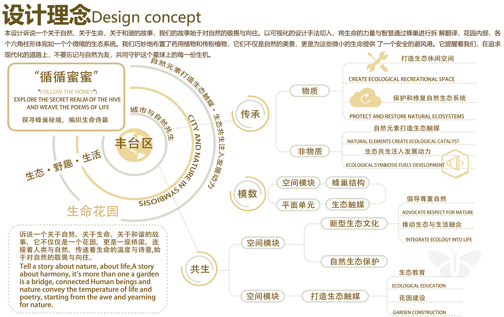
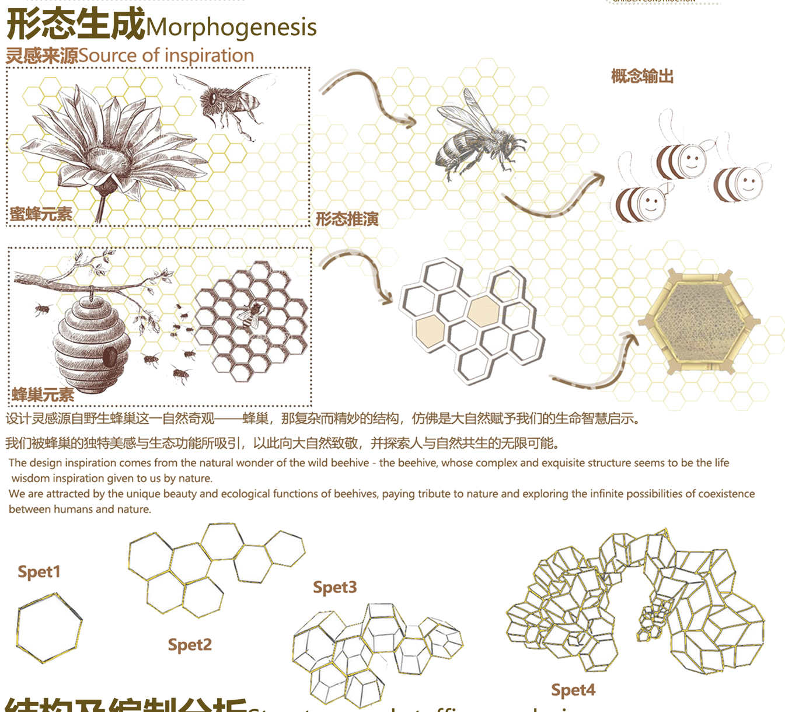
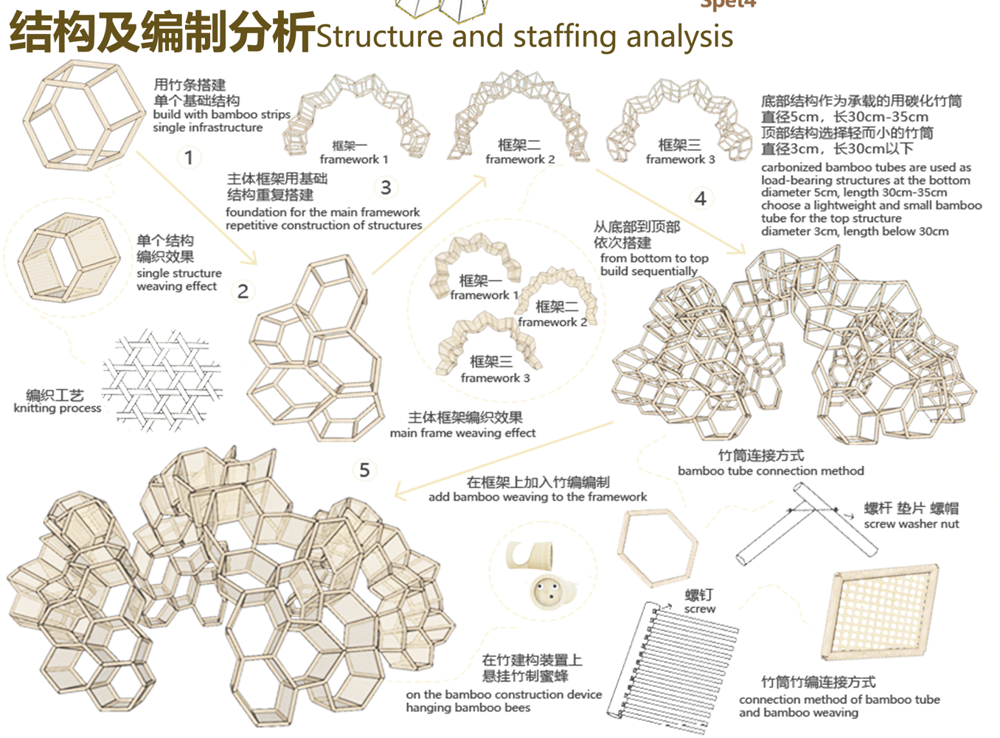
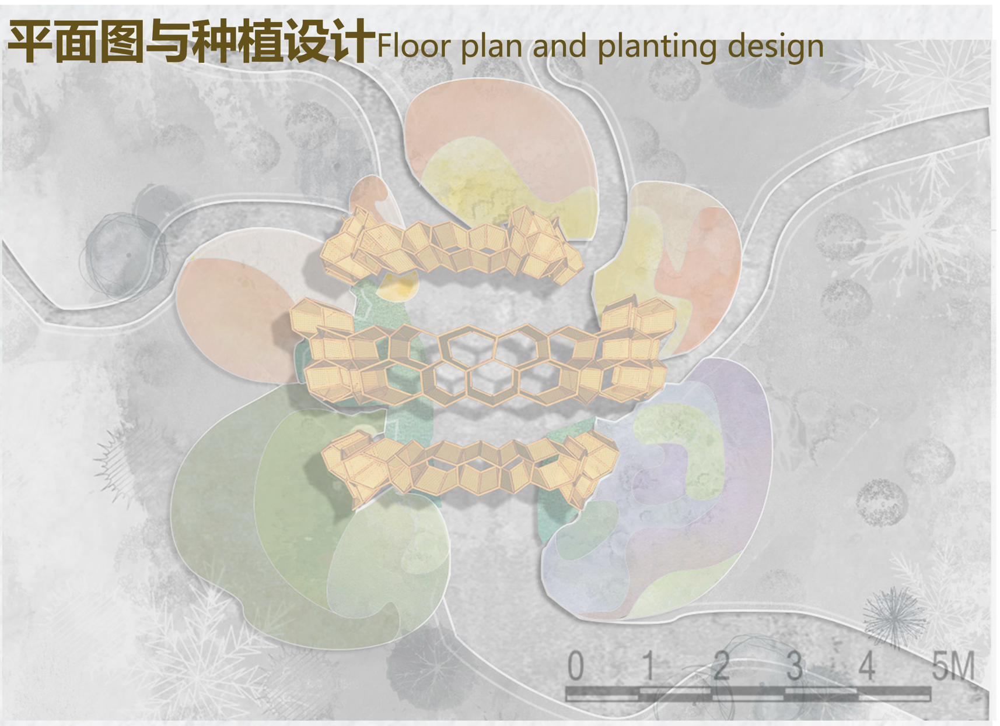
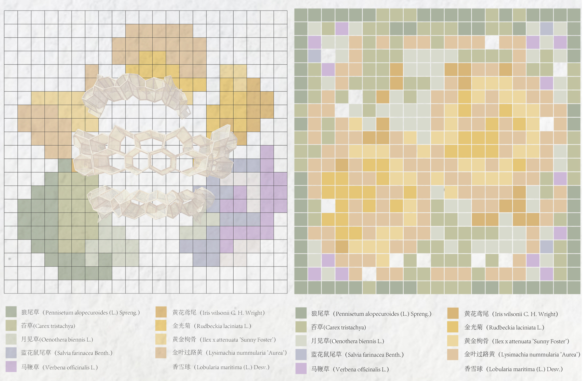
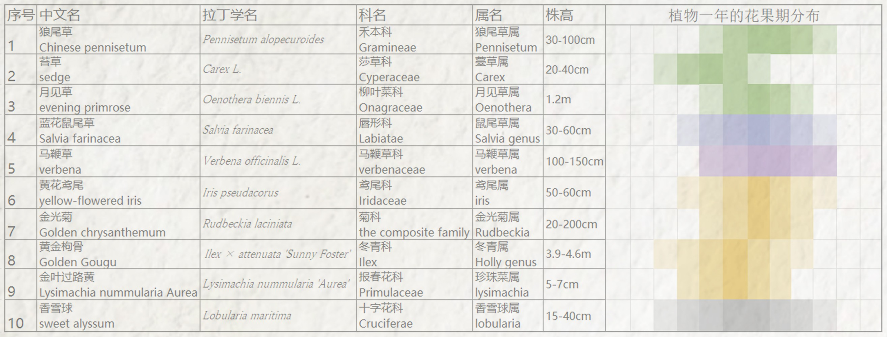
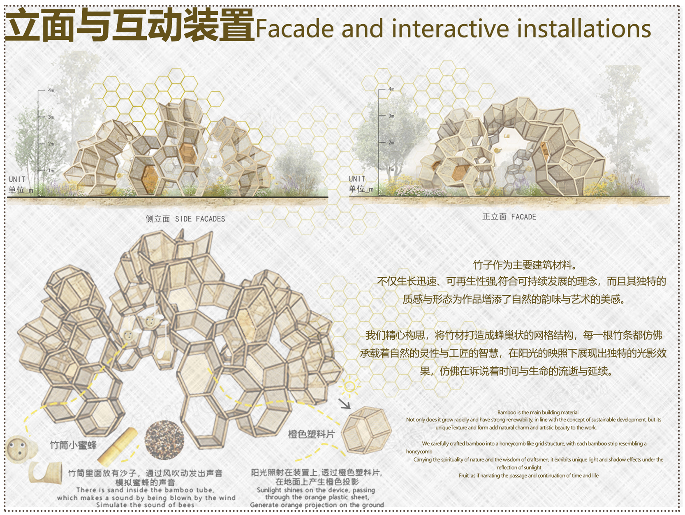

花园设计建造大赛
设计理念
核心概念
"循循蜜蜜" - 以蜂巢结构为灵感，打造可持续的生态花园空间
作品名称："循循蜜蜜"
"FOLLOW THE HONEY": 探寻蜂巢秘境，编织生命诗篇
本设计诉说一个关于自然、关于生命、关于和谐的故事，我们的故事始于对自然的敬畏与向往。以可视化的设计手法切入，将生命的力量与智慧通过蜂巢进行拆解翻译，花园内部，各个六角形柱体宛如一个个微缩的生态系统。
我们巧妙地布置了药用植物和传粉植物，它们不仅是自然的美景，更是为这些微小的生命提供了一个安全的避风港。它提醒着我们，在追求现代化的道路上，不要忘记与自然为友，共同守护这个星球上的每一份生机。
蜂巢结构
六边形模块化设计，创造微缩生态系统
生态友好
药用植物与传粉植物，打造生命避风港
自然共生
城市与自然和谐共生，生态触媒注入动力
生态·野趣·生活
丰台区 城市与自然共生
自然元素打造生态触媒·生态共生注入发展动力
核心板块
传承
- 物质 - 打造生态休闲空间
- 保护和修复自然生态系统
- 非物质 - 自然元素打造生态触媒
- 生态共生注入发展动力
模数
- 空间模块 - 蜂巢结构
- 平面单元 - 生态触媒
共生
- 空间模块 - 新型生态文化
- 倡导尊重自然
- 推动生态与生活融合
- 自然生态保护 - 生态教育
- 空间模块 - 打造生态触媒
- 花园建设
项目信息
设计框架与策略
基于蜂巢结构的自然智慧，我们构建了一个多维度、多层次的设计框架，将生态理念、空间功能与人文体验有机结合。
结构框架
以六边形蜂巢为基本单元，通过模块化组合实现空间的灵活性与可扩展性。每个六角形柱体既是独立的微生态系统，又是整体花园的有机组成部分。
- 标准化六边形模块设计
- 可变组合适应不同场地需求
- 结构稳定性与美学平衡
生态框架
通过精心选择的植物配置，创造丰富的生物多样性环境，为传粉昆虫提供栖息地，形成完整的生态链。
- 药用植物与传粉植物科学配置
- 微气候环境营造
- 季节性景观变化设计
体验框架
以人为本的空间设计，通过多层次感官体验，引导访客从观察到参与，从了解到行动。
- 多感官体验路径设计
- 互动式知识传播系统
- 社交与休憩空间有机结合
实施策略
可持续性策略
采用可回收材料，建立雨水收集系统，最大限度减少资源消耗和环境负担。
参与性策略
设计互动装置和教育空间，鼓励访客参与植物养护和生态保护活动。
适应性策略
模块化设计使花园能够适应不同季节、不同活动的需求变化，保持空间活力。
核心体验设计
通过多感官体验设计，我们创造了一个沉浸式的自然教育环境，让访客在"循循蜜蜜"的旅程中，重新发现与自然的连接。
视觉体验
六边形蜂巢结构形成的几何美学，与植物的自然形态形成对比与和谐，创造丰富的视觉层次。
形态变化
随季节变化的植物色彩与形态，提供动态的视觉体验
光影游戏
蜂巢结构在不同光照条件下创造丰富的光影效果
听觉体验
花园中的自然声音环境，从蜜蜂的嗡嗡声到植物的沙沙声，构成自然的交响乐。
生物声音
吸引传粉昆虫和鸟类，创造丰富的生物声音环境
风声互动
特殊设计的植物配置与结构，与风产生和谐共鸣
嗅觉体验
精心配置的芳香植物，随季节变化提供不同的嗅觉体验，唤起访客的情感记忆。
季节芳香
不同季节开花的芳香植物，提供变化的嗅觉体验
功能香气
药用植物的芳香不仅愉悦，还具有疗愈功能
触觉体验
不同材质和质感的对比，从蜂巢结构的平滑到植物的多样纹理，提供丰富的触觉体验。
材质对比
木材、金属、植物等不同材质的触感对比
互动触感
可触摸的植物和互动装置，鼓励主动探索
体验路径设计
好奇入口
独特的蜂巢入口设计，激发访客好奇心
探索发现
通过六边形路径探索不同的微生态系统
互动学习
互动装置和标识系统，传递生态知识
反思连接
中心休憩区，引导访客反思与自然的连接
效果图展示


设计过程
设计理念
本设计诉说一个关于自然、关于生命、关于和谐的故事，我们的故事始于对自然的敬畏与向往。以可视化的设计手法切入，将生命的力量与智慧通过蜂巢进行拆解翻译，花园内部，各个六角形柱体宛如一个个微缩的生态系统。
我们巧妙地布置了药用植物和传粉植物，它们不仅是自然的美景，更是为这些微小的生命提供了一个安全的避风港。它提醒着我们，在追求现代化的道路上，不要忘记与自然为友，共同守护这个星球上的每一份生机。

设计灵感
设计灵感源自野生蜂巢这一自然奇观。蜂巢，那复杂而精妙的结构，仿佛是大自然赋予我们的生命智慧启示。我们被蜂巢的独特美感与生态功能所吸引，以此向大自然致敬，并探索人与自然共生的无限可能。
通过将蜂巢的六边形结构进行解构与重组，我们创造了一个既具有自然美感又富有现代设计感的花园空间。每一个六角形单元都象征着生命的力量与智慧，共同构成了一个完整的生态系统。

设计结构及编制分析
用竹条搭建单个基础结构，通过结构重复搭建形成主体框架。从底部到顶部依次搭建，在框架上加入竹编编制，最后在竹建构筑物上悬挂竹制蜜蜂。
底部结构作为承载，使用碳化竹筒，直径5cm，长30cm-35cm；顶部结构选择轻而小的竹筒，直径3cm，长30cm以下。竹筒连接采用螺栓、垫片、螺母和螺钉，竹筒竹编连接采用传统编织工艺。

平面图、植物种植及配置图
平面图展示了"循循蜜蜜"花园的整体布局和空间组织。六边形蜂巢结构作为基本单元，通过不同组合方式形成了丰富的空间层次和功能区域。
种植设计图展示了植物的选择和配置方案，我们精心挑选了适合当地气候的本土植物，特别是药用植物和传粉植物。植物配置图详细展示了各类植物在花园中的具体位置和组合方式，创造了一个既美观又具有生态功能的植物群落。



立面与互动装置
立面图展示了"循循蜜蜜"花园的垂直空间关系和互动装置设计。竹子作为主要建筑材料，不仅生长迅速、可再生性强，符合可持续发展的理念，而且其独特的质感与形态为作品增添了自然的韵味与艺术的美感。
互动装置包括竹筒小蜜蜂（竹筒里面放有沙子，通过风吹动发出声音，模拟蜜蜂的声音）和橙黄色塑料片（阳光照射在装置上，透过橙黄色塑料片，在地面上产生橙色投影）。
